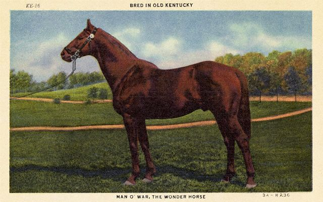

Nov. 15th & 16th -- St. Louis>
Indiana> Louisville, KY>
Lexington, KY
Louisville, a town filled with eyepoppingly lovely old homes,
was an easy drive. The
Seelbach Hilton in the heart of
downtown waited with not-so-open arms.
Pulling up, the scene curbside was chaotic. Cars idled all over
the place and there weren't enough people to park them. Traffic
attempting to pass honked incessantly, adding to the merriment. Rufus
got out of the car and was instantly flipped out by the noise. (He's
going to love Manhattan.) The hotel was understaffed
and all was running like a poorly oiled machine. The bellman was
genuinely baffled that a cart would be required to ferry our luggage
and disappeared for the longest time trying to get his hands on
one. The guys collecting the cars were equally invisible. Things that
were simple at every other hotel were hard here.
Still, the place had much to recommend it, visually anyway. The lobby
was
grand, which was
lucky. After spending almost half an hour getting our luggage freed
from our car we now had plenty of time to appreciate our surroundings:
it took another 15 minutes
to get checked in. It was getting late and we were hungry. Heading for
the
hotel's restaurant, we anticipated that we might have to wait a bit and
looked forward to having a drink at a bar that F. Scott Fitzgerald had
been bounced from. (One of many bouncings for F.Scott.)
Ironically, the hotel that once gave him the bum's rush now claims him
as a beloved
guest in its in-room propaganda. He is said to have met George
Remus, the bootlegger he modeled Jay Gatsby on at the Seelbach. And Tom
and Daisy Buchanan's wedding was set in the Grand Ballroom there.
In real life, the Seelbach is home to the only four-star restaurant in
Louisville. We
didn't have reservations, but it was close to eight and we were guests
at
the hotel, so we were hopeful. We had skipped lunch in anticipation of
tucking into a substantial supper and were more than ready for a good
meal. We checked with the
hostess,
who had just seated a group of hungry diners in
a perfectly nice area just outside the main dining room. Many such open
tables sat at
the ready. Not only did she not offer us one of the tables,
she took a look at us and said no table would be open for more than an
hour. Then, she gave us a snippy lecture about the restaurant's dress
code: "No jeans, no athletic shoes." (I was wearing jeans, a sweater,
boots and a perfectly nice black wool blazer; Eric, an Armani shirt and
cargo pants. I suppose someone not terribly schooled in athletic
footware might have been fooled by his shoes.)
If we didn't have Rufus in tow, we would have checked out. Finding
another place to stay with a dog in a small city on a rainy Friday
night isn't trivial. Thoroughly pissed,
we opted for room service and a movie in made a quick exit
next morning. Mr.
and Mrs. Bridge, which we had seen
years ago, brought back visions of now-familiar Kansas City; Ken Burns'
documentary on the Shakers
gave us a crash course on the Shaker Village we would visit the next
day.
As planned, we dropped in at the Louisville Slugger Factory and Museum
on our way
out of town. One of its most charming attributes is right at the front
door: who doesn't love an enormous baseball
bat? Inside, we
were ushered into a fancy,
steeply raked theater for a short film about how great it is to
slug a baseball. No doubt. The movie is meant to inspire in that Field
of Dreams
kind of way. Sadly, it's disjointed and dumb, failing to be bad
enough to be good. But all that was about to change. Once the movie was
over, doors under the screen swung open automatically and we were
channeled through a hallway featuring a trompe l'oeil locker room with the best urinal
art ever! Then, we climbed up through a little fake dugout and onto
a tiny faux ball field filled
with mannequin players. Now, this
is the kind of dumb I'm
seeking. Just look what they did to poor Red
Barber!
The next room is filled with glass dioramas demonstrating the history
of the
Louisville Slugger Company. Before making bats they made swinging butter churns. "Butter up!" (Sorry.) Eventually
they saw the
error of their ways. Other dioramas taught that trees are felled
to make baseball bats. (Ash, if you're curious.) It's this
kind of illustration of the obvious that makes for a great factory
tour: a mannequin logger perpetually
kneeling next to a looping
video
of the same trees being cut down over and over again. Then, we were
taken
onto the plant floor and issued explicit instructions not to touch or
photograph anything. It was the same drill at Celestial Seasonings:
these guys fear corporate espionage and lawsuits from guests who wonder
if it hurts to touch a spinning lathe.
It was a quiet day at the plant: the only discernible activity was in
the varnishing area, where bats were being dipped and hung to dry. We
were told
individual players had their own favorite varnishes. One wall stored
templates for embossing or branding players' signatures onto their
bats: the 3,000-plus metal signatures, each tucked into its own tiny
cubbyhole, charmed us. Sadly,there was no mint room
equivalent on this visit to batland. Though you could probably get high
as a kite hanging your head over a vat of varnish, no one invited us
to. And instead of tea samples, they handed us 16" baseball bats as we
left the plant floor.
So there we were, tiny bats tucked into our trunk, and back on the road
again--winding our way into Kentucky. We'd sleep in Lexington that
night. But on the way, we stopped at the Shaker Village at Pleasant Hill,
in Harrodsburg. It's an amazing restoration of one of the largest and
most successful of the Shaker colonies. Pleasant Hill was founded in
1805 in what was then considered to be the southwest--part of Mother
Ann Lee's vision for a Shaker outpost far from New England where she
foresaw "a great work of God." At its height, more than 500
Shakers lived here, worshiping and honoring the almighty through
ecstatic dance and an obsessive devotion to perfection in all works
undertaken. (Really quite Zen.) You can think kindly of the Shakers
each time you buy a seed packet: they started the first mail-order seed
business.(And true to their pursuit of excellence, the packages were
all beautifully illustrated.) The celibacy required by the members
might seem the thing most likely to guarantee the Shakers' extinction.
However, the move away from agrarian life following the Civil War
doomed more than the seed business. How are you going to keep them
down on the farm?
But what a farm. There are few prettier settings. The architecture is
inspiring: highly symmetrical, simple, functional--everything has
purpose. Inside, the spaces are enormously restful. We spent a few
hours on a very gray day wandering in and out of these lovely
structures, watching the light fade through the rippled glass in the
tall, graceful windows. Outside, we took in the rolling hills, and met
some of the farm's four-legged residents. (Rufus was intrigued. The
sheep were, too.) For those traveling without dogs, there's a fine
looking inn here. Sorry to say, the shortest member of our party wasn't
welcome.
Even if you don't give a fig about the Shakers or historic
restorations, eating a meal here is worth a long side trip. You'll be
rewarded with a meal that mimics really great home cooking. The
village's houses and workshops close about 45 minutes before dinner
time. So we wandered its paths, hunger building, taunted all the while
by the smell of frying chicken. Some of you were lucky enough to grow
up in homes in which someone knew how to make really great fried
chicken. You know the smell. For the rest: though this is Kentucky fried chicken, in no
way does its aroma resemble the one coming out of KFC. It smells like
something you'd want to eat.
The restaurant at Pleasant Hill is housed in an old dormitory, its
downstairs rooms converted to dining rooms. All is candle-lit: no
incandescent bulbs are in evidence. Handmade tin sconces hang from peg
chair rails, candles sit on each table. It couldn't be more inviting. A
relish bowl filled with olives, carrots, baby corn, pickles, radishes
and scallions staves off major hunger pangs while you consider what to
have for dinner. A young waitress in Shaker garb stopped by our table
with amazingly tender, cornbread sticks. Though neither of us have been
eating a whole lot of carbs of late, we were seduced. And it was a
slippery slope. A cup of split pea and ham soup followed, the best
either of us had ever tasted: lots of smoky ham taste, chopped carrots
and celery well represented, and the peas were silken--sieved or
pureed. Fabulous. I ordered an egg in aspic appetizer as it sounded odd
and intriguing. Turned out the aspic was spiked with anchovy paste and
the egg quickly became Eric's. (He enjoyed it.) The fried chicken
was even better than it had smelled. Dishes of perfectly cooked fresh
vegetables were placed on the table to go with. More bread
arrived--this time, the lightest soft white rolls imaginable, again,
just from the oven. We were powerless in their grasp. This wasn't a
meal for skipping dessert: lemon angel food cake and chess pie brought
things to a close. Enough! We didn't eat again for almost a full day.
It was a short drive along a winding road to get to Lexington, which
was truly just a stopover. Well fed, we checked in and went out to
stroll through the downtown. It was chilly: enough wind kicked up to
bring tears to our eyes. Walking through town, we were
stunned by the number of birds in the trees. Eric estimated five or six trees to
contained several thousands of them. I don't know if they had been
migrating and had been caught off guard by the cold, but they were
everywhere and they were agitated. Their chatter was unnerving. It felt
like outtakes from Hitchcock's "The Birds." Fitting, then, that we took refuge
in a great old theater, The Kentucky,
where they were kind enough to let us in to take a peek at its restored
interior.
Downtown's
blocks were punctuated with art: doors,
hung in their frames, mounted on stands to hold them in place, had been
decorated by artists. (Think Chicago Cow Parade, or the pigs of
Seattle.) Our favorite was one completely covered in knock-knock jokes,
written in a flowing script. It must have taken forever. It was an area
with a vibrant looking arts center, a fair number of failing or failed
businesses, a lovely courthouse and lots of bars with live music. Poco
was playing at one and we remembered another Saturday night nearly 30
years ago when we saw P.F.M open for them and wound up at a party with
the strongest pot we had encountered to date. There was no desire to
climb back in time. What with all those birds, we needed to keep our
wits about us.
STATS:
Miles traveled since trip started: 3,000
Number of four-star restaurants that pissed us off: 1
Number of Shakers still living as of 1984: 7
Number of Shakers still living today: ?
Number of rolls eaten at Pleasant Hill: we'll never tell
Snoozed at: Seelbach Hilton,
Radisson Plaza Hotel
Lexington